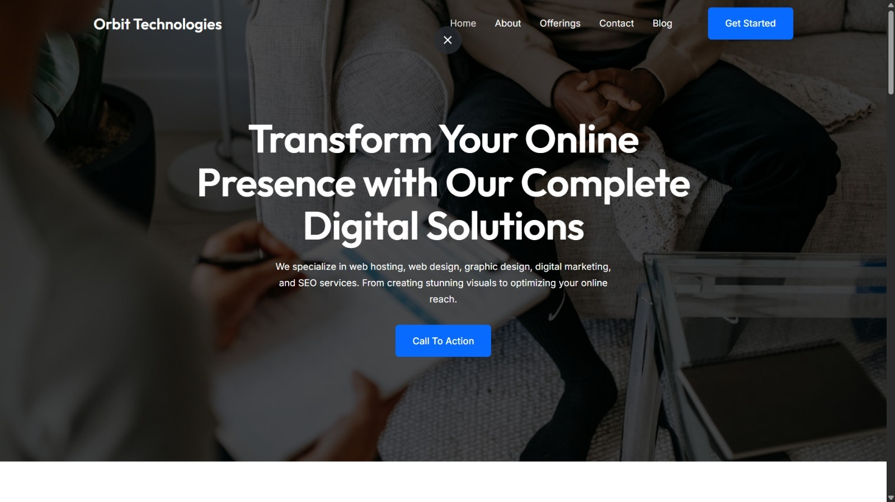

An intelligent retail management ecosystem combining secure RBAC with deep AI-driven business intelligence. Features an executive analytics command centre with 20+ AI insight modules, real-time financial metrics, and a dark-mode UI built for fast-paced retail environments.

A premium, trust-oriented consultancy platform engineered to drive appointment bookings at scale. Features data-driven credibility metrics (500K+ visas, 98% success rate), multi-tiered user funnels, and a cohesive navy-and-gold corporate identity.

A high-performance corporate landing page for a digital solutions agency. Built with an immersive hero presentation, a structured service matrix for Digital Marketing, Web Development and SEO verticals, and a fully responsive architecture from mobile to desktop.

A modern virtual tour platform for NUTECH Islamabad, letting users explore the entire campus online through interactive pages, images, and videos. Showcases 11 distinct campus locations with a clean, responsive UI and scalable architecture.

A robust .NET 8 console application for monitoring API endpoint health with parallel async execution. Tracks response times, status codes and uptime (UP/DOWN/SLOW), logs results to CSV, and integrates with GitHub Actions for fully automated scheduled monitoring runs.

A lightning-fast, memory-efficient text editor built entirely from scratch without STL containers. Achieves O(1) insertion and deletion via a custom gap buffer, unlimited undo/redo through a manual linked-list stack, and a Vim-inspired modal editing interface.

A 2D fighting game inspired by Street Fighter and Tekken, built with Java and Swing. Supports two human-controlled characters with attack animations, pixel-art samurai sprites, a hand-painted battlefield background, and a pause screen — all using a custom game loop.

Full-range (0–65535) stealth SYN port scanning via Nmap 7.98 against a target host. Catalogued thousands of closed and filtered ports while revealing 20+ active services including legacy vulnerability vectors (FTP, SSH, Telnet) across a comprehensive 2,511-second automated cycle.

Centralized risk management deployment using Greenbone OS 24.10.9. Tracks an enterprise collection of 170,109 continuous vulnerability tests, organising discoveries into clear severity action streams — 33K+ Critical and 66K+ High threat classifications surfaced and triaged.

Automated reconnaissance pipeline via Sn1per v9.2 performing combined host pinging, DNS tracking and subdomain hijacking checks. Isolated multiple critical exposure vectors including open administrative remote shell entries across ports 512–514 on the target network.